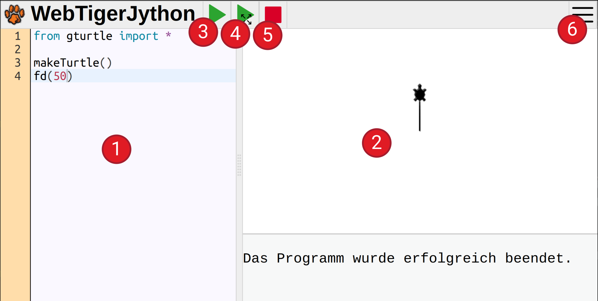

Einführung
In diesem Kurs lernst du, wie du einen Computer programmieren kannst. Dabei gehen wir davon aus, dass du noch kein Vorwissen mitbringst, und werden dir schrittweise alles erklären, was du dazu brauchst. Am Ende des Kurses hast du dann alles nötige zusammen, um z. B. ein kleines Chatprogramm oder Computerspiel zu programmieren.
Was heißt "Programmieren" überhaupt?
Programmieren heißt, einer Maschine Anweisungen zu erteilen und sie damit zu steuern. Die erste solche Maschine, die du steuerst, ist eine kleine Schildkröte auf dem Bildschirm: Die Turtle. Die Schildkröte versteht verschiedene Anweisungen um sich zu bewegen, zu zeichnen oder sich zu verstecken. Welche Anweisungen existieren und wie diese Anweisungen geschrieben werden müssen, ist in einer Programmiersprache definiert.
Die Programmiersprache, die wir in diesem Kurs lernen werden, ist Python. Python ist zurzeit die beliebteste Programmiersprache für Einsteiger und wird in der Industrie in vielen Bereichen eingesetzt. Beispielsweise wird Python in der Entwicklung von Websites oder im Bereich der künstlichen Intelligenz eingesetzt.
Python mit WebTigerJython
Wir werden mit einer Onlineumgebung starten, um Python zu programmieren. Diese Umgebung findest du im Web unter: https://webtigerjython.ethz.ch
Die Oberfläche ist einfach gestaltet und speziell für Einsteiger entwickelt worden. Sie besteht aus folgenden sechs Bereichen.
- Codeeingabe: Hier gibtst du den Python-Code ein
- Ausgabefenster: Hier siehst du das Ergebnis deines Programms
- Ausführen: Bei einem Klick auf diesen Knopf wird das Programm ausgeführt
- Ausführen im Vollbild: Führt das Programm im Vollbild-Modus aus
- Stop: Beendet das Programm sofort. Das ist notwendig, wenn du siehst, dass du einen Fehler gemacht hast
- Einstellungen: Hier kannst du Einstellungen ändern und die Hilfe anzeigen lassen

📝 Übung 1
Gib den Programmcode aus der oberen Grafik im WebTigerJython ein und klicke auf den Ausführen Knopf. Es sollte die gleiche Ausgabe erscheinen wie in der Grafik.
Tipps:
- Achte auf Groß- und Kleinschreibung
- Achte auf die richtigen Klammern! Es werden in dem Beispiel runde Klammern "(" und ")" benutzt. Eckige "[", "]" oder geschwungene "{", "}" Klammern bedeuten etwas anderes und funktionieren nicht!
- Wenn du einen Tippfehler gemacht hast, also beispielsweise statt
makeTurtle()den Textmaketurtle()geschrieben hast, erscheint eine Fehlermeldung im unteren Teil des Ausgabefensters. Versuche diese zu verstehen und den Fehler zu beheben. - Beachte folgende Regel beim Programmieren: Probiere alles selber aus! Je mehr Programme du selber schreibst, umso mehr wirst du verstehen und beherrschen.
Zusammenfassung
Wir haben unsere erste Umgebung zum Programmieren kennengelernt und ein erstes Programm eingetippt. Im nächsten Kapitel erfährst du, welche Anweisungen die Turtle versteht und wie du interessante Grafiken mit der Turtle zeichnen kannst.